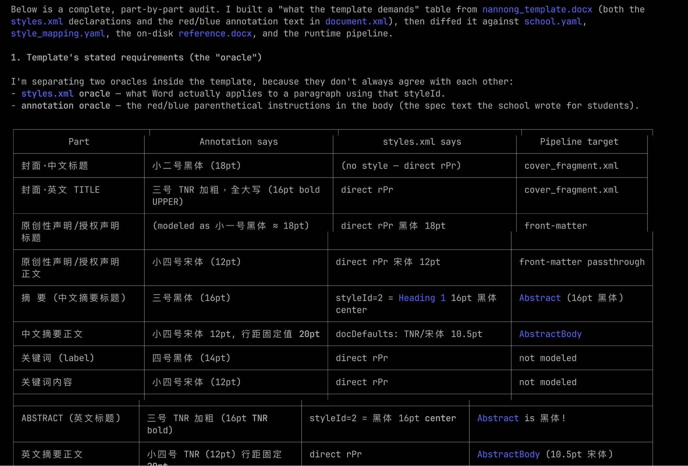
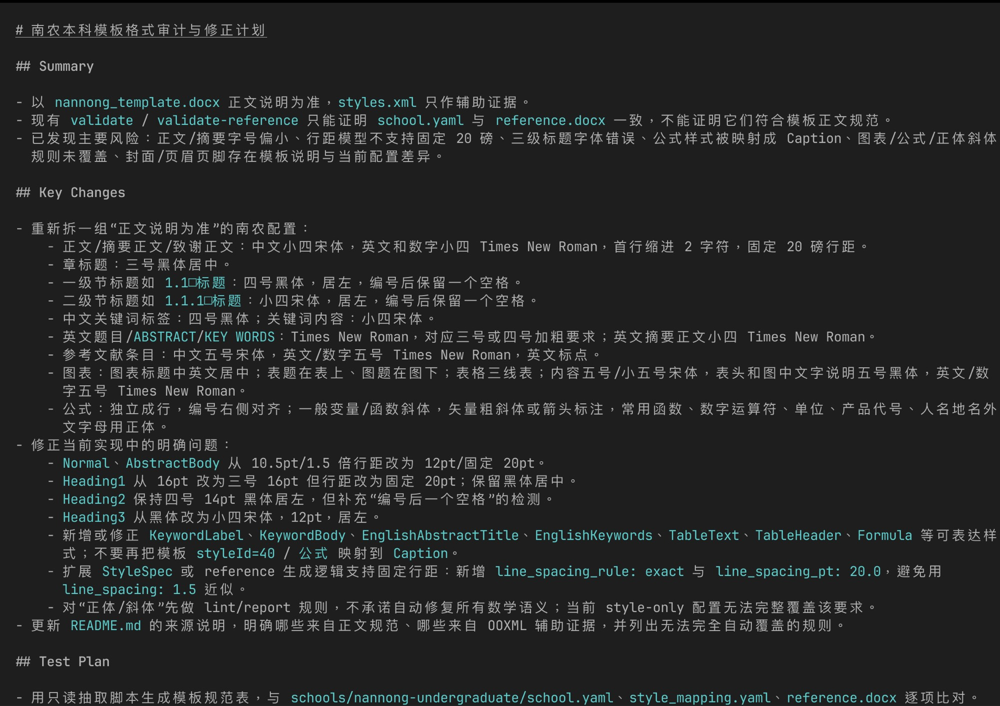
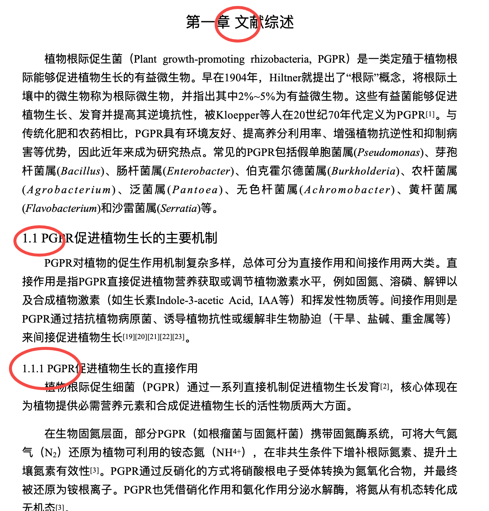
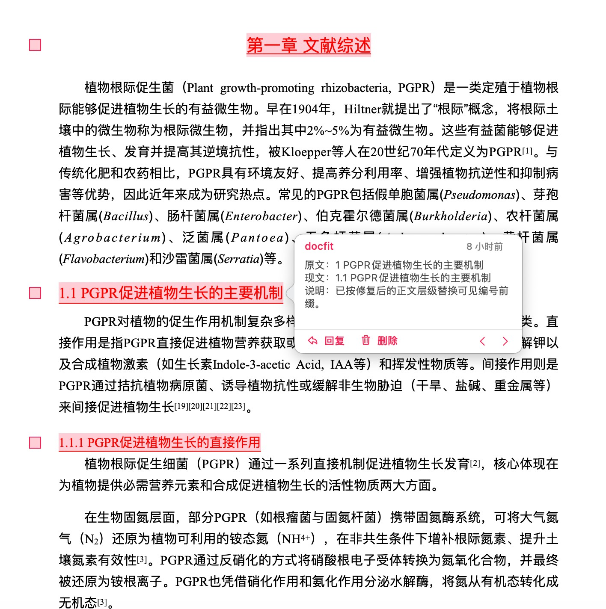

⏰
线下 Meetup 分享
借助 Claude Code Routine
把想法快速完成 0 到 1
一个人 + 一组 routine 怎么把新项目从 0 推到 alpha · 全程基本不坐电脑前
缪东旭（MiaoDX）
2026.04.26 · 直觉机器漫谈
先做个一句话自我介绍。承诺一下今天讲什么：让大家看到一个人 + 一组 routine 怎么把新项目从 0 推到 alpha，全程基本不坐电脑前。Routines 是 Opus 4.7 更新里容易被漏掉的一条，今天用一个真实在跑的项目 docfit 展开。不展开理论。
01
钩子 · 这是什么项目
docfit
把毕业生的 Word 文档
按学校模板要求自动校正格式
起源
朋友毕业季踩坑 → 这周五（2 天前）才开了这个 repo
用途
先给身边几个学校的同学做 alpha，再考虑公开
用一句话定义项目：把毕业生 Word 文档按学校模板要求自动校正。起源是朋友毕业季踩了坑。这周五才开的 repo，目前 private，跑稳后开源。先做 alpha 给身边几个学校的同学测——别让大家觉得"已经准备好了"，要诚实。
02
钩子 · 这玩意到底产出啥
讲了一路过程,看一眼产物
① 原始要求
三号黑体居中 / 四号黑体居左 / 小四宋体首行缩进 ……
② 原始输入
"第一章文献综述" 没空格 · "1" 该是 "1.1" · "1." 该是 "1.1.1"
③ 改后效果
章号空格补齐 · 1.1 / 1.1.1 编号对齐 · 字体字号符合模板
左→中→右,讲完三件事:学校怎么要求、学生实际写成什么样、docfit 跑完能恢复成什么样。一图胜千言。
把整场分享的"产物"直接拍出来。左边是模板红蓝批注 spec——学校的硬要求;中间是真实学生原稿,红圈标了几个典型踩坑(章节号缺空格、缺小数点、层级写错);右边是 docfit 跑完后的版本,章号、编号、字体全部对上模板。讲的时候只要顺着 ①②③ 念就行,听众一眼看到价值。如果对方还想看更多 case,提一句"这只是一个章首,模板里还有摘要、参考文献、图表标题等等都覆盖到了"。
03
钩子 · 第二天的样子
两天后的状态
commits 大部分都是 "MiaoDX 和 claude 撰写"
Claude web 移动端 sidebar — 这两天基本没坐过电脑
这是怎么做到的？
这页不展开技术细节，只让观众"看到东西在跑"。反差点重点：这两天我没坐过电脑，全部用手机操作。停 1 秒，留钩子："这是怎么做到的？" 然后过渡到核心 pattern。
04
核心 Pattern
从想法到 issue 到 agent 接手
1
和 Claude Opus 一起把想法变成 roadmap
这一步比"聊 roadmap"三个字要厚得多——下一页展开
2
把 roadmap 拆成 GitHub issues
每个 issue 一个明确的小目标
3
让 agent 挨个把 issue 解掉
每小时一个，跑起来就不用管
第 1 步比"聊 roadmap"三个字要厚得多。
念完三步骤后强调一句话：第 1 步比"聊 roadmap"三个字要厚得多。这是过渡到下一页的钩子。下一页讲 Opus 不是搜索框，是反问者。
05
核心 Pattern · 第 1 步
Opus 不是搜索框，是 反问者
Opus 主动反问 dimensions，而不是直接搜
"Word→LaTeX 这一步不一定必要"——Opus 主动挑战初版假设
Opus 的价值不是"帮我们搜",是 "逼我们想清楚"。
这两张图都是 docfit 的真实对话片段。重点：Opus 第一步不是去 deep research，是反问"你这里的 dimension 是什么"。第二张是它主动挑战我的初版方案——我本来想 Word→LaTeX→Word，它说这一步不一定必要。这种反问比"答案"更值钱。
06
核心 Pattern · 第 2 步
拆 issue 的颗粒度
20 issue + 4 milestone + 29 label + 依赖评论 一次性创建
这一步做得好不好,直接决定了后面 agent 能跑多远。一个含糊的 roadmap 拆出的 issue 也是含糊的,含糊的 issue 给到 auto_pr 就是垃圾进垃圾出。
直接念引用。强调"垃圾进垃圾出"——agent 没法替你想清楚需求，需求模糊就是模糊的产出。这一步虽然慢但不能省。
07
哲学锚点
为什么选择云端
🧪
一致性
每个人电脑上 Python / CUDA 都不一样
Routines 跑在 Anthropic 容器里，每次环境一样
⏱️
持续性
本地合上电脑就停了
云上人睡觉时它在干活
📱
设备解耦
操作可以迁移到手机
agent 工作周期和人的工作周期彻底解耦
一个软件项目由一群轮班工程师维护,每个人来的时候都没有上一班的记忆。— Anthropic Engineering · "Effective harnesses for long-running agents"
所以真正的工作不是写 prompt，是给这些轮班工程师设计工作环境——让他们即使没有记忆，也能顺畅接班。
本地仍然不可替代 —— 最后的 check、复杂的 debug、需要进程级观察的场景，还是要回到电脑前。云端解决的是"开发工作流"的问题。
这一节是整个分享的"哲学锚点"。三层差异念完之后停一下，让大家消化"轮班工程师"这个比喻。这个比喻不是花拳绣腿——它直接决定了后面四个 routine 设计的所有约定（分支隔离、comment 协议、显式降级）。让大家先把这个心智模型建立起来，后面看具体设计就顺了。
08
架构总览
四个 Routine · 一主三辅
主力 · 每小时
auto_pr
挨个解 issue，整套流程的核心动作
辅助 · 每天
issue_label
扫 backlog 打优先级 — 禁止写代码
辅助 · 每天
pr_again
救援"代码推上去了但 PR 没建成"的孤儿分支
辅助 · 每天
daily_duty
CI 兜底 + dead code 清理 — 不碰 auto_pr 的分支
用文章里的 SVG 图。重点强调：auto_pr 是主力，三个辅助本质上都在兜底。如果 MCP 工具足够稳，pr_again 和 daily_duty 的大部分职责其实可以退化——它们存在的价值很大程度上来自当前工具的不完美。
09
auto_pr · 主力
每小时一次的核心引擎
两个值得分享的设计
设计一
断点续传
每次启动先检查有没有未收尾的 claude-issue-* 分支——上一班留下的活，先接完再开新的
设计二
三态自评
FULLY RESOLVED / PARTIALLY DONE / DIMINISHING RETURNS
给它一个"做一半也 OK"的出口,它反而会诚实汇报。
两个设计点别讲超过一分钟。断点续传呼应"轮班工程师没有上一班记忆"——只能通过 repo 痕迹推断现在该干什么。三态自评是反直觉但很有效：逼 agent 装完美不如给它退路，它反而更诚实。下一页是辅助 routine。
10
auto_pr · 证据链
PR + Session 链接 = 可回放的工作记录
每个 auto_pr 产出的 PR 底部，都贴着 claude.ai/code/session_xxx 链接
点进 session 链接 → 看到 agent 完整的思考过程、工具调用、文件改动
review PR 不只能看到最终代码,还能看到 代码是怎么产生的。
这一页是整个证据链最关键的一页。Session 链接的存在让这套系统不是黑盒：每一次 auto_pr 都留下完整的执行回放。两层意义：(1) 证明确实是 agent 干的活，(2) 出问题时能精确定位 agent 当时怎么思考的。这个设计也直接降低了 review 的成本——不用问"为什么这么改"，链接里都有。
11
辅助 Routines
三个辅助 · 各司其职
🏷️
issue_label
每天扫一遍 backlog，打优先级 label
禁止写代码（物理隔离）
🆘
pr_again
扫"代码推上去了但 PR 没建成"的孤儿分支
救援 MCP 工具的不稳定性
🧹
daily_duty
CI 兜底 + dead code 清理
不碰 auto_pr 的分支
职责严格不重叠。那么——怎么做到不重叠？
这一节快讲，每个一句话就过，不展开。重点是让观众感受到"职责严格不重叠"这件事的存在，让他们好奇怎么做到的。然后下一节专门讲两条隐性协议——这是整个分享技术干货密度的峰值。
12
暗线 · 协作协议
4 个 agent 怎么不打架
协议一
分支命名空间隔离
claude-issue-* · claude-health-* · claude-ci-fix-* · claude-cleanup-*
每个 routine 有自己的 playground，物理上不会踩脚
协议二
GitHub comment 作为消息协议
[auto-pr] · [ci-fail] · [deferred] · [conflict]
这些前缀就是 agent 之间的消息——一个 routine 留 tag，另一个扫 tag 接手
就这两条 —— 没有中心调度器,没有 orchestration 服务,没有专门的消息队列。
这两条协议是整个分享技术含量最高的一页。直接念。然后强调"就这两条"——观众通常会预期听到一个复杂的 orchestration 架构，结果发现就是分支前缀 + comment tag 这么朴素。这种反差是这页的力量。
13
暗线 · 为什么 GitHub 就够
GitHub 已经是消息总线
连 issue 之间的依赖也用 GitHub 原生原语承载
issue 内容写得多详细，agent 就能跑多远
这个设计有点像 Erlang 的 actor model 哲学——独立失败,通过消息协作。
GitHub 已经为人类团队提供了一整套协作原语（issue / comment / label / branch / PR）。把同样的原语用到 agent 身上——不需要发明新东西。
两张图：依赖关系用 GitHub 原生承载，issue 写得详细 agent 就能跑得动。Erlang actor model 类比这里念一下，这个类比对工程背景的观众尤其有共鸣。最后一句话收一下——不需要造任何 orchestration。
14
docfit 实战 · 桌面视角
2 天里 docfit 的 GitHub 长什么样
26 commits · claude 是 co-author · 4 个 milestone · 多个 PR 并行推进
下面挨个 milestone 看一眼实际产出 —— 这些 commit 背后每一段在干什么。
这页核心是冲击力——GitHub 桌面视角看到 26 commits、claude 是 co-author、多个 milestone PR 在推进。让观众第一反应是"这工作量看起来很真实"。停 2 秒让大家扫一眼，然后过渡："下面挨个 milestone 看一眼这些 commit 背后是什么"。
15
Milestone · 阶段一
M0 → M2 · 立骨架 → 跑通 pipeline
Phase 1 完整 todos checklist
M0 项目骨架 + CI
M1 把"北航毕设格式 spec"沉淀成 seed corpus + 特征提取
M2 端到端 pipeline 跑通：docx → 分段 → 检测 → 输出
每个 todo 都对应一个具体 PR——这就是 agent 能跑的颗粒度。
M2 是杠杆点：之后的识别引擎、回归测试、新学校 onboard，全部建立在它上面叠加。
M0 是骨架，M1 是把一个学校（北航）的毕设 spec 沉淀成种子，M2 把端到端 pipeline 整体打通。重点：每个 todo 一个 PR——这就是 agent 能跑的颗粒度。颗粒度太大跑不动，太小没意义。M2 是杠杆点，后面所有工作都在它上面叠加。
16
Milestone · 阶段二
M3 → M4 · 加测试 → 换学校验证
一个 issue 长什么样 — What / Scope / 支持的扰动类型
M3 加扰动工具 + 回归测试，让"识别准不准"有客观数字衡量
M4 Onboard 清华（第二所学校）—— 验证换学校能不能复用
什么样的 issue 才能让 agent 跑得动？细节够厚 + 边界明确 + 依赖关系明确。
诚实话：这套东西目前还在调试期，docfit 也还没到 alpha。alpha 距离也很清楚：≥20 份脱敏样本 + 5 人 alpha 测试。
M3 引入回归测试是质量上的关键步骤——文档处理类项目，没有回归测试很容易"修一个坏一个"。M4 验证"换学校能不能复用"——这是这类工具最关键的 generalization 验证。诚实话很重要：不要夸张说"做了产品"。还在调试期，alpha 距离很具体。
17
翻过的车
翻车 = harness 多一行约束
→
auto_pr 曾经把同一个 issue 重复处理两遍
加："检查是否已有 claude-issue-{number} 分支"
→
daily_duty 曾经去合 auto_pr 的分支撞车
加："不碰 claude-issue-* 分支"
→
issue_label 曾经"顺手"修了 bug 提了 PR
加：大写禁令"ONLY labels/closes issues"
每一次翻车都变成 prompt 里多一行约束。这就是 harness 的日常迭代。
三条翻车直接念。重点是收尾那句：每次翻车都变成 prompt 里多一行约束——这就是 harness 的日常迭代。让观众理解 harness engineering 不是写完一次就完事，是出错-封住的循环。
18
⏰
切电脑
⚡ 现场 Demo
claude.ai/code Routines 页面 →
Code dispatch 视图 → GitHub docfit repo → 一个最近合入的 PR + session 链接
演示路径：1) claude.ai/code Routines 页面看 docfit 的 routine 列表 2) Code dispatch 视图看当前在跑的 session 3) GitHub docfit repo 的 PR list 4) 点进一个最近合入 PR，给大家看底部的 claude.ai/code/session_xxx 链接 5) 点进 session 看 agent 当时的思考过程。提前测试网络和登录态。备选：放屏幕录屏。
19
适用边界
不是银弹
✓ 适合的场景
- 产出可视化强的项目
- 新想法到原型阶段（60–70 分目标）
- 工具类、SDK 类、有明确 spec 的功能
- 独立模块较多的 repo
✗ 不适合的场景
- 深度调试（需要本地 profiler）
- 硬件交互（传感器、真实机器人）
- 主观审美（创意文字）
- 复杂线上状态（生产事故复盘）
把 routine 当 senior intern 用,不是当 senior engineer 用。
直接念边界。重点是收尾那句心态——把 routine 当 senior intern 用，不是当 senior engineer 用。能干很多活，但需要设计好它的工作环境、兜底机制、明确的"我干完了"信号。
20
组合拳 · 第一招
云端走不动了,先换脑子
Routine 在跑,但架构层面的判断需要另一个模型的视角。
🧠
ChatGPT Pro · 接 GitHub
把整个 repo 喂进去,问"如果重新设计这套 pipeline,你会怎么拆?"。Pro 模型在大跨度结构提议上比 Routine 更敢下手。
🔁
不是替代,是对照
Claude 给一版,ChatGPT 给一版,我自己拍板。两边吵架的地方,就是真正值得想清楚的地方。
把 Parse → Detect → Rewrite → Output 重新拆成 7 个明确 stage 的提议
这一页讲的是组合拳。Routine 适合"按既定方向往前推",但当我开始怀疑"这个方向本身对不对"的时候,不再问 Claude——而是把整个 repo 给 ChatGPT Pro,问它"你会怎么重新设计这条 pipeline?"。Pro 在大跨度结构提议上更敢下手。两个模型给两版,差异本身就是信息。
21
组合拳 · 第二招
调到第 N 轮,不如切回本地
Routine 的反馈周期是"小时级"。有些事它扛不住——
↳ Routine 撑不住的场景
- 一个改动要跑 10+ 轮才能收敛
- 需要边跑边看 本地文件 / 渲染产物
- 问题在多份文档之间交叉对照(spec / code / 输出三方对齐)
- 调试需要断点 / profiler / 反复手测
↳ 本地 Claude Code / Codex 的优势
- 反馈周期从小时压到秒
- 可以直接
open 文件、跑脚本、看真实产物
- 多轮 prompt 共享同一份活的上下文
- 翻车成本低——不用等 PR、不污染历史
云端管"宽度",本地管"深度"。
这页是"为什么要切回本地"。Routine 异步、按小时调度,适合横向铺开;但碰到一个需要 10+ 轮收敛、要看本地产物、要对照多份 spec 的活,异步就太重了。这时候切回本地 Claude Code 或 Codex,反馈周期从小时变成秒。下一页给一个真实例子。
22
组合拳 · 真实例子
南农模板格式审计 · 本地一晚搞定
要交叉对照 4 份资料:
nannong_template正文规范
×
styles.xmlOOXML 声明
school.yaml当前配置
×
reference.docx真实产物
每条规则都要去四个地方各看一眼,逐项 diff。
云端 PR 跑这种活:每轮 1 小时,要 10 轮以上;
本地 Codex / Claude Code:一晚拉通,带着审计表 + 修正 plan 出门。


逐项对比表 + Summary / Key Changes / Test Plan
真实例子。docfit 要支持南农本科模板,我得拿模板正文规范、styles.xml、当前 school.yaml、生成的 reference.docx 四份东西交叉对齐——每条规则都要看四遍。这种活如果丢给云端 routine,每轮一小时,改完一处又要重审一遍,周期受不了。我直接切到本地,Codex / Claude Code 带着我一晚把整张审计表 + 修正 plan 拉通。第二天上班直接照着 plan 改。这就是云端铺宽度、本地下深度的真实分工。
23
What's Next
把调度权也交出去
现在的 schedule 是 人定下来的——每个 routine 跑什么频率、谁先谁后、出问题怎么兜底，都是配 routine 时写死的 cron。
但 Routines 同时还开放了 API 触发和 GitHub Webhook —— routine 不再是单纯定时任务，而是可以被其他 agent 调用的可编程节点。
设想
让 OpenClaw 当 meta-scheduler
OpenClaw 接 Slack / 飞书 → 接收人随手发的指令
→ 根据 repo 当前状态，自主决定触发哪个 routine
→ 人的工作从「配 schedule + review PR」简化为「发几句话 + review PR」
每个 routine 都自带一个 Bearer token 端点
这一节是个钩子，不展开。重点：Routines 已经开放 API 和 Webhook 触发，所以 routine 不只是 cron 任务，是可编程节点。下一步想试让 OpenClaw 当 meta-scheduler——这个方向走通的话，人的工作从"配 schedule + review PR"简化成"发几句话 + review PR"。这个方向还没做，但能力已经在那里。
24
开头那张图 · 这里 callback
改完不是黑盒——每一处都附 review
docfit 跑完,产出不是一个新文件就甩给你:
- → 新版 docx + 每一处改动的 Word 批注
- → 批注里写清:
原文 / 现文 / 说明
- → 学生打开 Word,逐条 review / 接受 / 拒绝
开头给你看「我们要做啥」,
结尾给你看「我们不会乱改」。


改后稿 · 每条修改都挂一条 docfit 批注:原文 → 现文 → 说明
这页和开头那张视觉 hook 是 callback。开头那张图说"我们要做啥",这一页说"我们不会乱改"。docfit 不是把学生稿子直接覆盖——每一处自动改动都会挂一条 Word 批注,写清楚"原文 / 现文 / 说明"。学生打开 docx,Word 自带的批注侧栏就是 review 界面,逐条接受或拒绝。这其实是这套方案能落地的关键:agent 写的东西必须可审计、可回退,用户才敢用。讲完这个再切到最后一页收尾。
25
收尾
一句话总结
Opus 聊方向 → 拆 issue → auto_pr 每小时干一点 → daily routines 每天兜底 → 人只做 review 和方向把控
🌐 miaodx.com · 📝 公众号：直觉机器漫谈 · 🐙 GitHub：MiaoDX
念那句一句话总结，停一下。然后欢迎大家扫码继续交流，问 Q&A。如果讲得早可以多给观众 Q 时间。

![architecture overview]()
![message protocol diagram]()